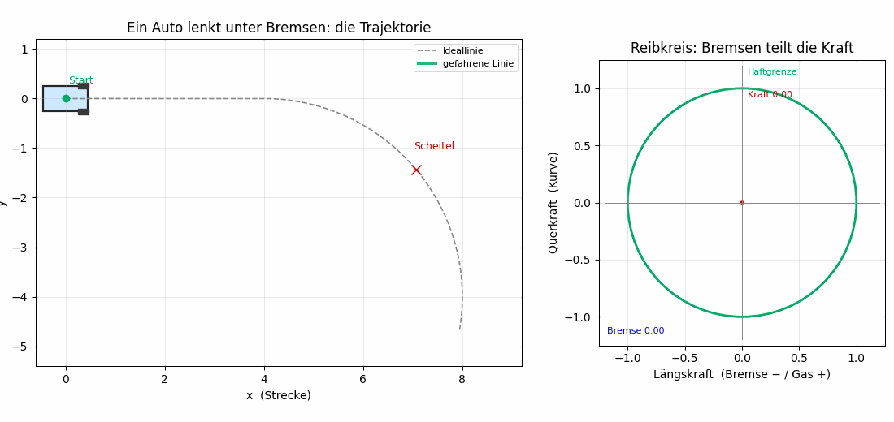
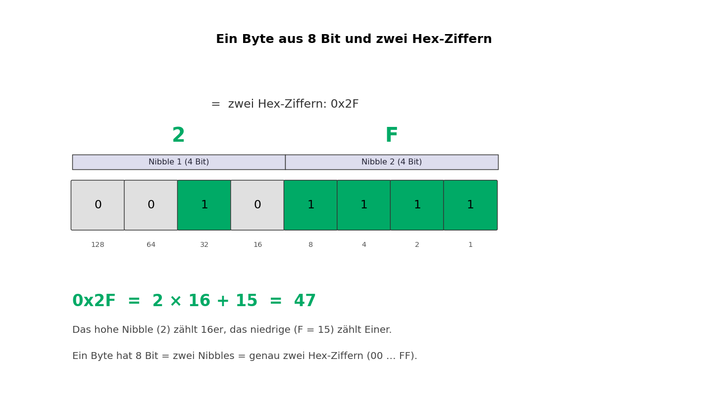
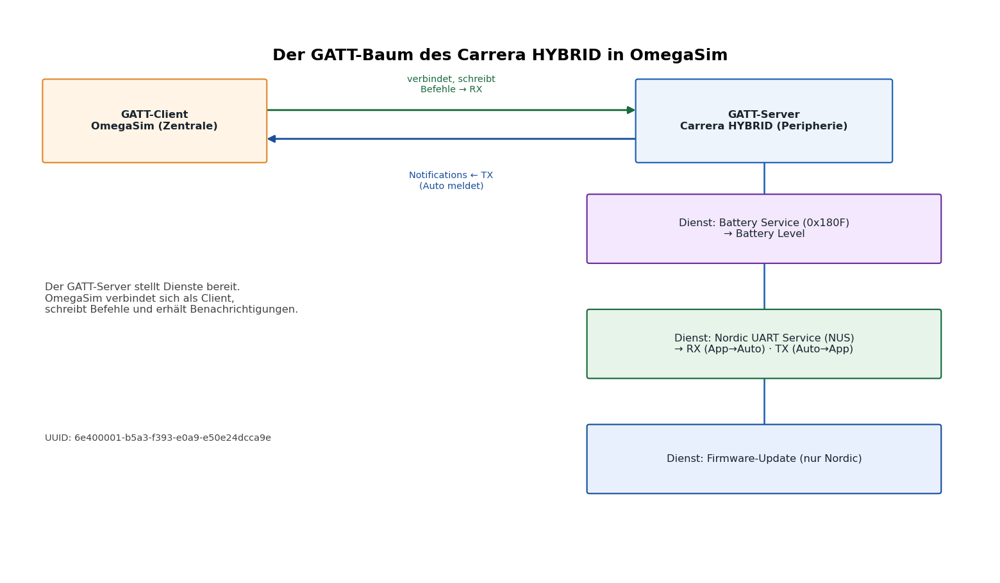

Noch nichts veröffentlicht – nur die neuen Dateien zum Anschauen und Anhören. Quellen liegen in docs/wiki-quelltext/*.wiki, Medien in docs/wiki-audio/ und docs/wiki-bilder/.
In den Artikel Motorsound.wiki kommen diese vier Klänge als [[Datei:…]] (MediaWiki-Abspieler). Hier direkt als HTML5-Audio zum Anhören.
Boxer-6, gleichmäßige Zündung → glattes Kreischen. Beschleunigung aus dem Stand mit Gangwechseln (0 → Höchsttempo).
docs/wiki-audio/p992gt3r_demo.oggCross-Plane-V8, ungleichmäßige Zündung → das typische „Blubbern“. Hochdrehen mit 5 Gangwechseln.
docs/wiki-audio/mustang_demo.ogg3,4-l-V8. Aus der Aufnahme als Beschleunigung mit Gangwechseln berechnet (Drehzahl wird hoch- und beim Schalten kurz heruntergefahren).
docs/wiki-audio/sd_v8gt_demo.ogg5,2-l-V10. Aus der Aufnahme als Beschleunigung mit Gangwechseln berechnet (hochdrehend bis zum Begrenzer).
docs/wiki-audio/sd_v10_demo.ogg
Links die Trajektorie (Geradeaus → Bremsen → Kurve), rechts der Reibkreis mit dem Kraftpfeil. Datei: docs/wiki-bilder/OmegaSim-Bremsen-Lenken-Trajektorie.gif (1100×520, 60 Frames).

Datei: docs/wiki-bilder/OmegaSim-Byte-Hex.png (1430×806).

Datei: docs/wiki-bilder/OmegaSim-GATT-Baum.png (1560×910).
docs/wiki-quelltext/Motorsound.wiki – Version 1.2.51, Hörbeispiele, Crossplane-Wikipedia-Link
docs/wiki-quelltext/Pacejka.wiki – Animation, Hans-B.-Pacejka-Wikipedia-Link
docs/wiki-quelltext/Hexadezimalsystem.wiki – Byte/Hex-Diagramm
docs/wiki-quelltext/Bluetooth_Low_Energy.wiki – GATT-Baum-Diagramm